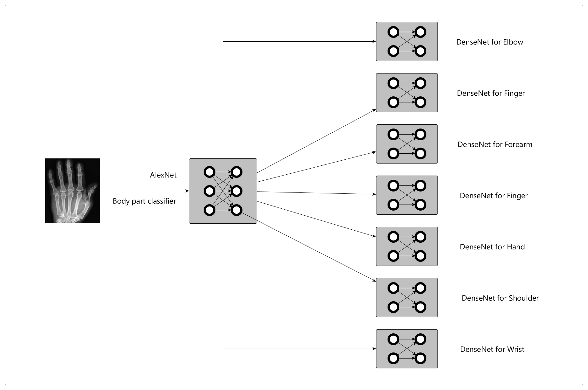

MURA (musculoskeletal radiographs) is a large dataset of bone X-rays. Algorithms are tasked with determining whether an X-ray study is normal or abnormal.
Musculoskeletal conditions affect more than 1.7 billion people worldwide, and are the most common cause of severe, long-term pain and disability, with 30 million emergency department visits annually and increasing.
More information on the dataset can be found here.
Every X-ray image can be a normal or abnormal:
- Elbow
- Finger
- Forearm
- Hand
- Humerus
- Shoulder
- Wrist
Conceptually, this is a hierarchical convolutional neural network involving two steps:
- Classifying the body part into 1 of 7 types.
- Running the image through 1 of the 7 classifiers built for each body part
What is AlexNet?
AlexNet a convolutional neural network with 5 convolutional layers and 3 fully connected layers. AlexNet is used to predict the body part. Further more details on AlexNet can be found here.
What is DenseNet?
DenseNet is a network architecture where each layer is directly connected to every other layer in a feed-forward fashion (within each dense block). Further more details on DenseNet can be found here.
For each of the 7 body parts, we trained 16 different variants of DenseNet and chose the best 1 for each body part.
The visualization below illustrates the performance of the 2-level models - first one for body part classification and second one for abnormality classification.
The true label of the image is encoded in the color of the particle. The predicted label of the image is encoded in the direction of the flow. For example, a red particle flowing to the Finger node can be interpreted as An elbow has been classified as Finger.
The height of the bar indicates the precision i.e. What percent of predicted parts are correct? For example, a 95% precision on Elbow means that Out of 100 parts predicted as elbow, 95 are actually elbows.
| Actual | Predicted | ||
| Normal | Abnormal | ||
| Normal | 382 | 102 | |
| Abnormal | 180 | 185 | |
Neural networks are generally considered to be a black-box which magically returns the desired output on some hyperparameter tuning. To understand more about how the Neural network learns about these images, we have implemented Grad Cam.
Gradient-weighted Class Activation Mapping (Grad-CAM), uses the gradients of any target concept, flowing into the final convolutional layer to produce a coarse localization map highlighting the important regions in the image for predicting the concept.